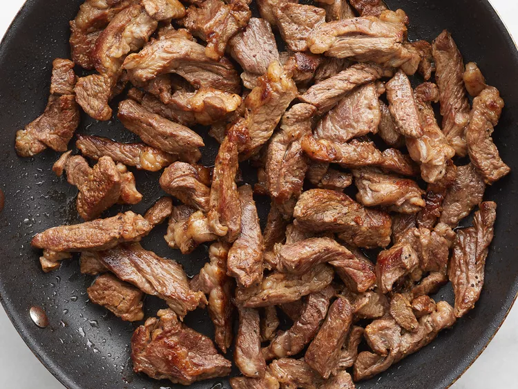
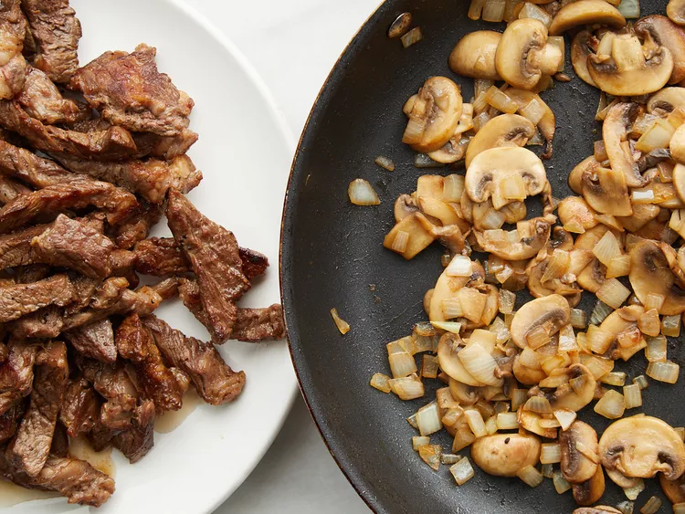
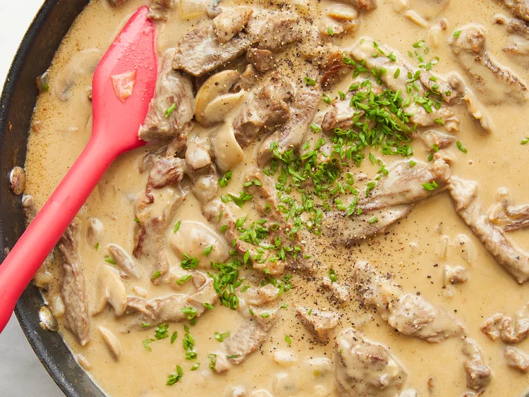
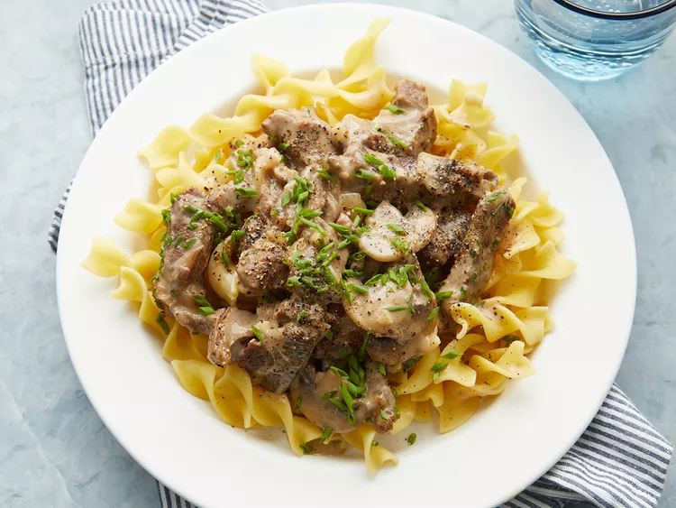

This rich and creamy beef stroganoff recipe is made with ground beef and served with egg noodles. It's super simple to prepare, and ready to serve in under 30 minutes making it a great choice for busy weeknights. Garnish with freshly chopped parsley.
Step 1
Season beef generously with salt and pepper.
Step 2
Heat oil in a large skillet over high heat until nearly smoking. Stir in beef; cook, stirring constantly, for 6 to 7 minutes, until liquid evaporates and meat browns.
Step 3
Remove meat from the pan and set aside. Stir mushrooms, onions, and butter into the pan; cook and stir over medium heat until vegetables are lightly browned.
Step 4
Add garlic and stir for 30 seconds. Stir in flour; cook for 1 to 2 minutes until incorporated. Stir in wine and 1 cup of broth, scraping the bottom of the pan to release any browned bits. Bring to a simmer and cook until the sauce thickens, about 3 to 4 minutes.
Step 5
Return beef to the pan. Stir in remaining cup of broth; bring to a simmer and cook on low heat for about 1 hour, covered, until beef is tender and sauce is thick. Stir every 20 minutes.
Step 6
Stir in crème fraîche. Stir in chives. Season with salt and pepper to taste.
Step 7
Serve hot and enjoy!
